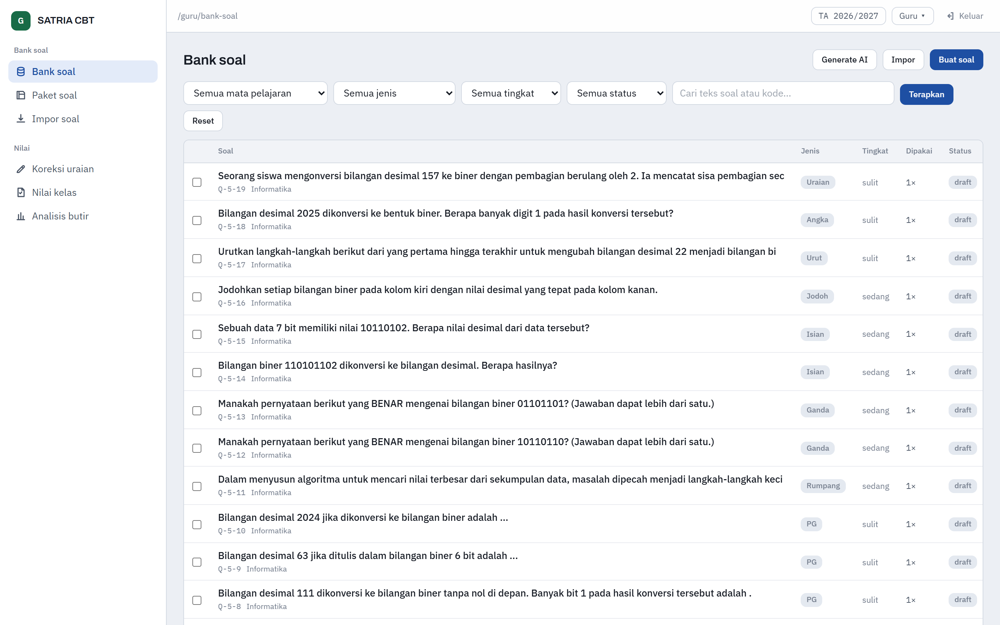
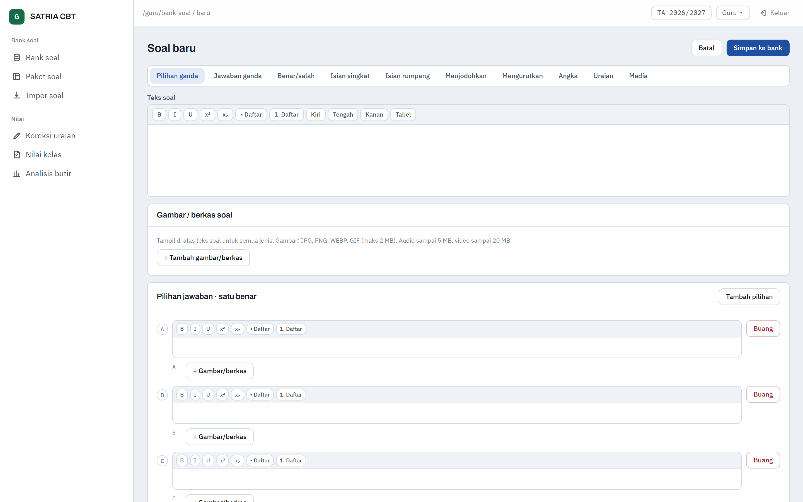
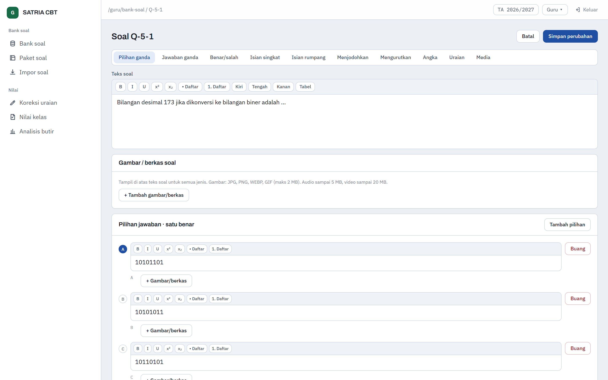
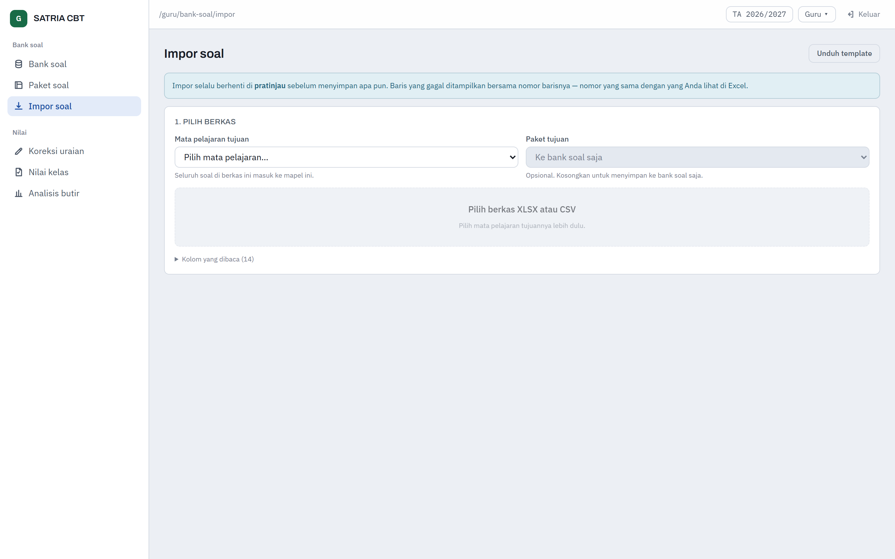
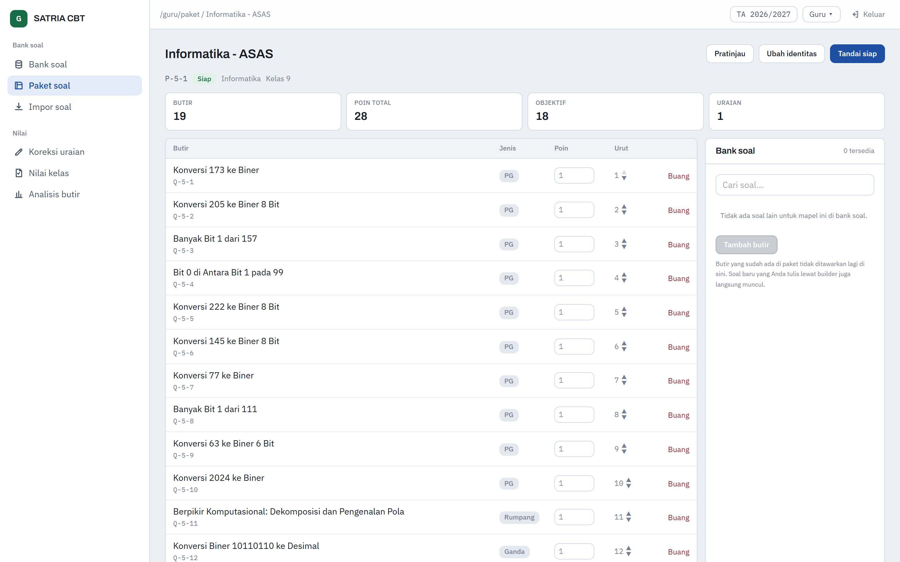
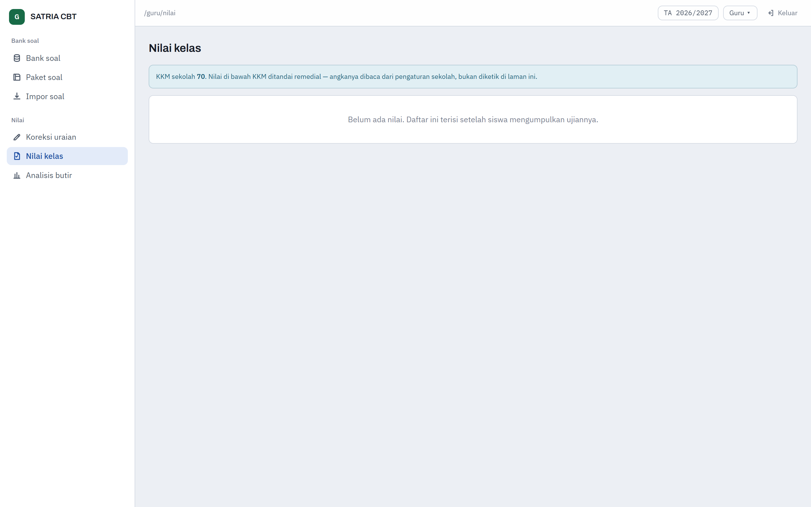
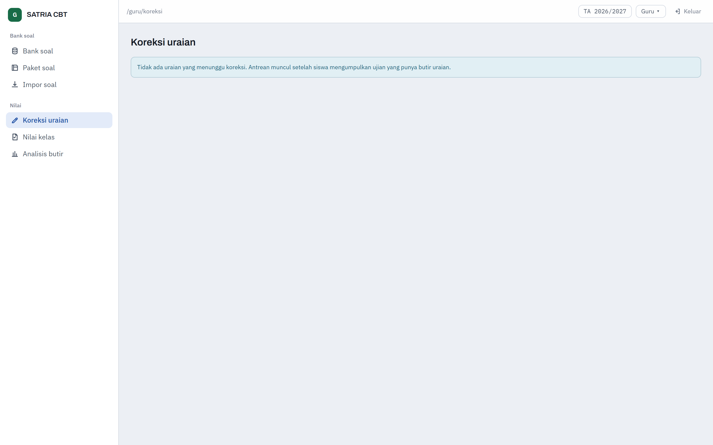
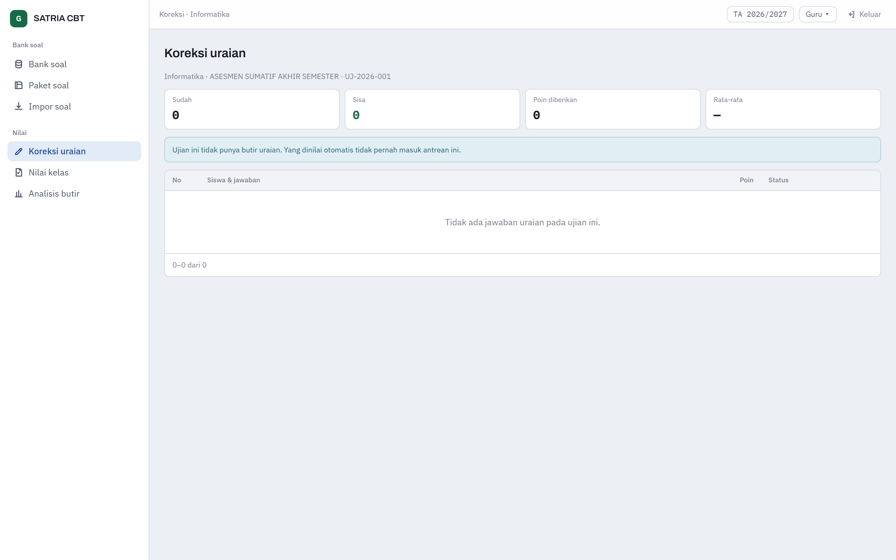
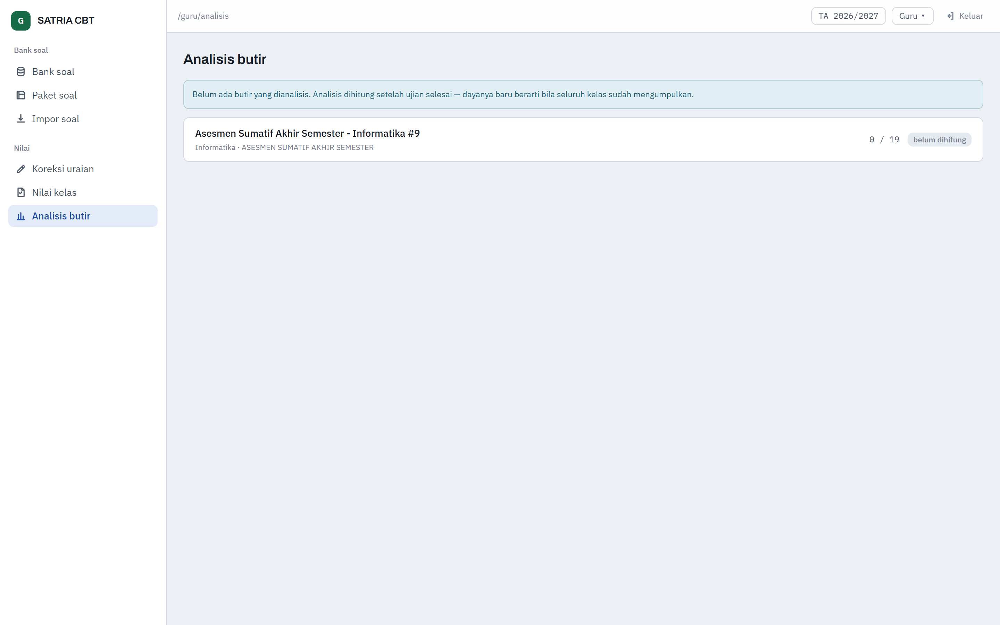

Tutorial Guru SATRIA CBT
Panduan bergambar untuk menyusun soal, merakit paket, dan menilai hasil ujian.
Konsol Guru tidak berbicara tentang event. Semua pekerjaannya berdiri di luar kegiatan ujian: Anda menulis soal, menyusunnya jadi paket, lalu menilainya setelah ujian berjalan. Admin yang memasang paket Anda ke event — bukan Anda.
Pemisahan itu disengaja. Satu paket soal bisa dipakai di beberapa event sekaligus, dan guru yang bisa memasangnya sendiri akan menulis paket yang hanya cocok untuk satu ujian.
Enam menu, tiga kelompok
Sidebar Guru dibagi tiga:
- Bank soal — Bank soal, Paket soal, Impor soal. Tempat Anda menyusun.
- Nilai — Koreksi uraian, Nilai kelas, Analisis butir. Tempat Anda membaca hasil.
- Di bawahnya, tidak terlihat sebagai menu: TA 2026/2027, semester yang aktif.
Urutan yang diikuti tutorial ini
-
BAB 1
Masuk & berandaApa yang boleh Anda sentuh, dan cakupan mana yang berlaku.
-
BAB 2
Bank soalDaftar soal yang Anda tulis, penyaringnya, dan dua tindakan massal.
-
BAB 3
Menulis soalSepuluh jenis soal, satu tab per jenis, dan bentuk kunci masing-masing.
-
BAB 4
Impor soalMenulis tiga puluh soal di luar aplikasi, dan pratinjau yang menahan kesalahannya.
-
BAB 5
Paket soalMengumpulkan butir, menetapkan poin, dan menandai siap.
-
BAB 6
Nilai kelasNilai setelah ujian berjalan — dan mengapa ia masih kosong.
-
BAB 7
Koreksi uraianSatu-satunya pekerjaan yang tidak bisa diotomatiskan.
-
BAB 8
Analisis butirSoal mana yang perlu diperbaiki, dan kapan angkanya bermakna.
-
BAB 9
Aturan & batasCakupan mapel, arsip, dan hal-hal yang tidak bisa Anda lakukan.
1. Masuk & beranda
Apa yang boleh Anda sentuh, dan cakupan mana yang berlaku.
Beranda Guru tidak menampilkan event, jadwal, atau peserta. Ia menjawab satu pertanyaan: apa yang sudah saya kerjakan? Tiga angka, dan tiga pintasan.

Tiga angka di atas
- Soal saya — berapa butir yang Anda tulis. Tidak menghitung soal Guru lain.
- Paket — berapa paket soal yang Anda susun.
- Kelas diampu — berapa penugasan mengajar yang menempel pada akun Anda.
Bank soal berlaku lintas event
Kotak biru di tengah beranda bukan hiasan; ia menjawab pertanyaan yang paling sering muncul: soal ini untuk ujian yang mana?
Jawabannya: tidak untuk yang mana pun secara khusus. Soal yang Anda tulis masuk ke bank soal sekolah dan bisa dipakai di ujian mana pun, termasuk oleh Guru lain yang mengampu mata pelajaran sama. Yang menentukan cakupan Anda adalah penugasan mengajar — bukan event, bukan kelas ujian.
Dua kelompok pintasan
Menyusun soal
Tiga tautan, sesuai urutan pekerjaan: menulis satu soal, mengimpor banyak sekaligus, atau menyusun paket dari yang sudah ada.
Koreksi & nilai
Koreksi uraian, nilai kelas, dan analisis butir membaca jawaban siswa — dan jawaban baru ada setelah mesin ujian berjalan. Ketiganya akan kosong sampai ujian yang memakai paket Anda benar-benar dikerjakan. Itu wajar, bukan tanda ada yang rusak.
2. Bank soal
Daftar soal yang Anda tulis, penyaringnya, dan dua tindakan massal.
Bank soal adalah daftar seluruh soal yang boleh Anda pakai — yang Anda tulis sendiri, dan yang ditulis Guru lain untuk mata pelajaran yang sama. Halaman ini tentang menemukan soal; menulisnya ada di Bab 3.

Lima kolom yang perlu dibaca
- Soal — judul singkat butir, bukan teks lengkapnya.
- Jenis — chip pendek: PG, Ganda, B/S, Isian, Rumpang, Jodoh, Urut.
- Tingkat — kelas sasaran yang Anda tetapkan sendiri saat menulis.
- Dipakai — berapa paket soal memuat butir ini.
- Status — Draf, Siap, atau Arsip.
Penyaring
Tiga penyaring di atas tabel: pencarian teks, jenis soal, dan status. Ketiganya bekerja bersama — menyaring dengan jenis Uraian lalu mencari kata tertentu hanya menampilkan uraian yang cocok.
Terapkan menjalankan penyaring, Reset mengosongkannya. Penyaring yang tersisa di layar tetapi sudah tidak dipakai adalah penyaring yang membuat Anda menyimpulkan salah tentang jumlah soal.
Dua tindakan massal
Centang beberapa baris untuk mengaktifkan tombolnya.
Duplikat
Menyalin soal terpilih menjadi soal baru berstatus Draf. Berguna untuk soal yang mirip tetapi angkanya berbeda — varian A dan B dari satu butir yang sama.
Arsipkan
Menyingkirkan soal tanpa menghapusnya. Soal arsip hilang dari daftar bawaan tetapi tetap bisa dicari lewat penyaring status.
Menulis soal dengan AI
Tombol Generate AI membuka laman yang menyusun draf soal dari deskripsi Anda. Ia memakai penyedia model bahasa milik sekolah, dan dibatasi per Guru — bila Anda menerima pesan tentang jatah, bukan berarti aplikasinya rusak.
Soal hasil AI tidak tersimpan otomatis. Yang tersimpan hanya butir yang Anda centang di laman itu, dan yang tidak dicentang hilang saat lamannya ditutup.
3. Menulis soal
Sepuluh jenis soal, satu tab per jenis, dan bentuk kunci masing-masing.
Builder soal adalah satu-satunya tempat Anda menulis butir. Bentuk formulirnya berubah mengikuti jenis soal yang dipilih, karena kunci jawaban setiap jenis memang berbeda bentuknya.

Sepuluh jenis soal
- Pilihan ganda — satu jawaban benar di antara beberapa pilihan.
- Jawaban ganda — lebih dari satu pilihan benar.
- Benar/salah — satu pernyataan, dua kemungkinan.
- Isian singkat — jawaban berupa teks pendek, dinilai dari daftar varian.
- Isian rumpang — kalimat berlubang, tiap lubang punya varian jawabannya sendiri.
- Menjodohkan — memasangkan dua kumpulan.
- Mengurutkan — menyusun deret menjadi urutan yang benar.
- Angka — jawaban numerik, dengan toleransi.
- Uraian — jawaban bebas. Tidak dinilai otomatis.
- Media — stimulus berupa berkas; mekanisme jawabannya tetap salah satu dari yang di atas.
Teori singkat sebelum mulai
Yang perlu Anda pahami bukan tombol-tombolnya, melainkan satu perbedaan: soal yang dinilai mesin dan soal yang harus Anda nilai sendiri.
Hanya Uraian yang masuk kategori kedua. Kesembilan jenis lainnya dinilai otomatis, dengan syarat kuncinya bisa dicocokkan — karena itu isian singkat meminta daftar varian (bukan satu jawaban), dan angka meminta toleransi (bukan nilai tunggal).
Langkah menulis satu soal
-
Pilih jenis soal di tab atas. Bagian kunci jawaban di bawah menyesuaikan diri.
-
Tulis teks soal. Bilah di atasnya menyediakan tebal, miring, garis bawah, pangkat, subskrip, daftar, perataan, dan tabel.
-
Bila soal butuh gambar, audio, atau video, tekan Tambah gambar/berkas di bagian Gambar / berkas soal. Berkas ini tampil di atas teks soal, bukan di dalamnya.
-
Isi bagian kunci jawaban sesuai jenisnya.
-
Di bagian Detail soal, tetapkan judul singkat, tingkat, dan status.
-
Tekan Simpan ke bank.
Batas berkas
- Gambar — JPG, PNG, WEBP, GIF, maksimal 2 MB.
- Audio — maksimal 5 MB.
- Video — maksimal 20 MB.
Menyunting soal yang sudah ada

Memeriksa sebelum menyimpan
Laman Pratinjau menampilkan soal sebagaimana siswa melihatnya — tanpa kunci, tanpa pembahasan. Pakai itu untuk memastikan gambar termuat, tabel tampil rapi, dan pilihan jawabannya tidak terpotong.

4. Impor soal
Menulis tiga puluh soal di luar aplikasi, dan pratinjau yang menahan kesalahannya.
Menulis satu soal di peramban masuk akal untuk satu butir, dan tidak masuk akal untuk tiga puluh. Impor soal menerima berkas XLSX atau CSV, memeriksanya lebih dulu, lalu menunggu Anda menyetujui.

-
Unduh template dari laman ini. Jangan menyusun berkas dari nol — susunan kolomnya menentukan hasilnya.
-
Isi di luar aplikasi. Satu baris satu soal; kolomnya menentukan jenis, kunci, dan poinnya.
-
Unggah berkasnya. Aplikasi menampilkan pratinjau baris per baris: mana yang akan dibuat, dan mana yang ditolak beserta alasannya.
-
Periksa pratinjaunya. Bila angkanya tidak seperti yang Anda duga, batalkan — belum ada yang berubah.
-
Tekan konfirmasi. Baru sekarang data tersimpan.
Setelah konfirmasi
Impor punya riwayat: berkas apa, berapa baris berhasil, berapa gagal, dan kapan. Riwayat itu juga menyimpan laporan galat untuk baris yang ditolak — bacalah bila jumlah berhasilnya tidak sesuai harapan.
Tiga kesalahan yang paling sering
- Kunci tidak sesuai jenis. Kunci pilihan ganda adalah satu huruf; kunci menjodohkan adalah pasangan. Bentuk yang salah membuat barisnya ditolak, bukan dikoreksi diam-diam.
- Isian singkat dengan satu varian. Berkas impor yang hanya memuat satu jawaban menghasilkan soal yang menilai terlalu keras. Tulis variannya sejak di berkas.
- Mapel di berkas berbeda dari mapel Anda. Cakupan Anda ditentukan penugasan mengajar; baris untuk mapel yang tidak Anda ampu akan ditolak.
Mengubah soal hasil impor
Impor tidak menautkan soal ke berkasnya. Setelah masuk, soal hasil impor sama seperti soal yang Anda tulis di builder: bisa disunting, diduplikat, dan diarsipkan dari Bab 2.
5. Paket soal
Mengumpulkan butir, menetapkan poin, dan menandai siap.
Paket soal adalah daftar butir yang akan dikerjakan siswa dalam satu ujian. Satu paket berisi soal-soal dari satu mata pelajaran saja, dan bisa dipakai di beberapa event.
Daftar paket

-
Tekan Buat paket, isi nama, mata pelajaran, dan tingkat kelasnya.
-
Klik nama paket untuk membuka isinya.
Mengisi paket

Empat angka di atas
- Butir — jumlah soal dalam paket.
- Poin total — jumlah seluruh poin. Ini penyebut nilai siswa.
- Objektif — berapa butir yang dinilai mesin.
- Uraian — berapa butir yang harus Anda nilai sendiri.
Menambah butir
Panel kanan menampilkan bank soal untuk mata pelajaran paket ini. Soal yang sudah ada di paket tidak ditawarkan lagi, sehingga tidak mungkin terjadi duplikat.
-
Cari atau telusuri bank soal di panel kanan.
-
Centang butir yang diinginkan, lalu tekan Tambah butir.
Poin dan urutan
Tiap baris punya kotak Poin yang bisa disunting langsung, dan tombol naik/turun untuk mengubah urutan. Tombol Buang mengeluarkan butir dari paket — tanpa menghapusnya dari bank soal.
Menandai siap
Tombol Tandai siap mengubah status paket dari Draf menjadi Siap. Admin hanya bisa memasang paket yang berstatus Siap.
Syaratnya satu: paket tidak boleh kosong. Selain itu tidak ada gerbang — termasuk tidak ada pemeriksaan apakah kunci jawabannya benar.
Pratinjau paket

Ini satu-satunya layar yang memperlihatkan paket sebagai satu kesatuan. Memeriksa butir satu per satu di bank soal tidak akan memperlihatkan apakah urutannya masuk akal, apakah dua soal terlalu mirip, atau apakah bobotnya seimbang.
6. Nilai kelas
Nilai setelah ujian berjalan — dan mengapa ia masih kosong.
Nilai kelas adalah nilai siswa pada ujian yang memakai paket Anda. Halaman ini membaca, bukan mengubah — kecuali bila Admin membuka kunci koreksi.
Bila daftarnya kosong

Setelah ujian berjalan

Laman ini berisi empat angka di atas dan tabel per siswa di bawah.
- Siswa — berapa yang sudah mengumpulkan.
- Rata-rata, Tertinggi — keduanya dihitung dari nilai akhir, bukan nilai objektif saja.
- Remedial (< 70) — berapa siswa di bawah ambang. Angka ini membantu menentukan siapa yang perlu ditindaklanjuti.
Kolom tabelnya: NIS, Nama, Obj. (nilai objektif), Uraian (nilai dari koreksi manual), Nilai (gabungan keduanya), dan Status.
Penyaring kelas
Daftar bisa disempitkan per kelas. Ini berguna pada ujian yang diikuti beberapa kelas: rata-rata seluruh angkatan mencampur kelas yang berbeda kemampuan, dan pertanyaan “kelas saya bagaimana?” hanya bisa dijawab setelah disaring.
Apa yang tidak bisa Anda lakukan di sini
- Menyunting nilai objektif — ia dihitung dari kunci jawaban. Bila angkanya salah, kuncinya yang salah, dan itu diperbaiki lewat Admin (hitung ulang setelah kunci dibetulkan).
- Mempublikasikan — publikasi hasil adalah keputusan Admin, per event.
- Mengubah nilai uraian di sini — itu dilakukan di laman koreksi.
7. Koreksi uraian
Satu-satunya pekerjaan yang tidak bisa diotomatiskan.
Ini satu-satunya pekerjaan di konsol Guru yang tidak bisa diotomatiskan. Kesembilan jenis soal lain dinilai mesin; uraian menuntut Anda membaca jawaban seorang anak dan memutuskan berapa nilainya.
Daftar antrean

Per ujian

Setiap ujian punya halamannya sendiri, dan bisa dibuka dari daftar.
Empat angka di atas
- Sudah — berapa jawaban yang sudah Anda nilai.
- Sisa — berapa yang belum.
- Poin diberikan — total poin yang sudah Anda berikan.
- Rata-rata — rata-rata poin per jawaban yang sudah dinilai.
Menilai satu jawaban
-
Buka satu baris dari antrean. Anda melihat teks soal, jawaban siswa, dan rubrik bila soalnya punya.
-
Baca jawabannya. Tentukan poinnya.
-
Tekan simpan. Baris itu keluar dari antrean, dan angka Sisa berkurang satu.
Menilai dengan adil, dan tetap cepat
Rubrik ada untuk alasan ini. Bila soal uraian ditulis tanpa rubrik, dua jawaban yang setara bisa menerima poin berbeda hanya karena Anda membacanya di jam yang berbeda. Tiga kebiasaan yang menolong:
- Nilai satu soal untuk seluruh siswa dulu, baru pindah ke soal berikutnya. Menilai satu siswa untuk semua soalnya membuat Anda berganti patokan di setiap jawaban.
- Baca dua jawaban sebelum memberi poin pertama. Patokan Anda bergeser setelah melihat jawaban yang sangat bagus atau sangat buruk.
- Jangan menilai di sisa sepuluh menit sebelum rapat. Kelelahan menggeser penilaian ke arah yang tidak Anda sadari.
Setelah selesai
Bila angka Sisa sudah nol untuk seluruh ujian di event itu, Admin bisa menerbitkan hasilnya. Beri tahu Admin bahwa koreksi Anda sudah tuntas — aplikasi tidak mengirim pemberitahuan otomatis untuk itu, dan Admin yang menunggu tidak akan tahu kecuali Anda mengatakan.
8. Analisis butir
Soal mana yang perlu diperbaiki, dan kapan angkanya bermakna.
Analisis butir menjawab pertanyaan yang berbeda dari nilai kelas. Nilai kelas bertanya bagaimana siswa saya; analisis butir bertanya bagaimana soal saya.
Daftar ujian

Per ujian

Lima kolom:
- Dijawab — berapa siswa menjawab butir ini.
- Benar — berapa yang benar.
- Daya beda — seberapa baik butir ini membedakan siswa yang menguasai dari yang belum.
- Putusan — kesimpulan aplikasi tentang mutu butir.
Membaca daya beda
Daya beda membandingkan siswa peringkat atas dengan peringkat bawah pada butir yang sama. Angka tinggi berarti butir itu memisahkan keduanya dengan baik; angka mendekati nol berarti butir itu tidak membedakan apa pun.
Tiga tafsir yang berguna:
- Tinggi — butir bekerja sebagaimana mestinya. Pertahankan.
- Rendah — semua menjawab benar, atau semua menjawab salah. Butir itu tidak memberi informasi tentang siapa yang menguasai. Bisa jadi terlalu mudah, bisa jadi soalnya ambigu.
- Negatif — siswa yang lebih kuat justru lebih sering salah. Ini tanda paling kuat bahwa ada yang keliru: kunci yang salah, atau soal yang menyesatkan.
Menghitung ulang
Tombol Hitung ulang menghitung analisis dari data yang ada sekarang. Ia tidak mengubah nilai siswa — hanya memperbarui angka analisisnya. Aman ditekan berkali-kali, dan perlu ditekan lagi setelah koreksi uraian selesai.
9. Aturan & batas
Cakupan mapel, arsip, dan hal-hal yang tidak bisa Anda lakukan.
Bab ini mengumpulkan hal-hal yang tidak muncul di layar sampai Anda mencoba melakukan sesuatu yang tidak diizinkan. Membacanya lebih dulu lebih murah daripada menemukannya satu per satu.
Cakupan Anda ditentukan penugasan, bukan URL
Tidak satu pun alamat di konsol Guru memuat id kelas, id mapel, atau id event. Yang membatasi apa yang Anda lihat adalah penugasan mengajar yang diisi Admin.
Konsekuensinya:
- Bank soal hanya menampilkan mata pelajaran yang Anda ampu.
- Bila penugasan Anda dihapus Admin, soal yang pernah Anda tulis tidak hilang — ia tetap di bank soal, dan Anda berhenti melihatnya.
- Bila Anda mengampu dua mapel, bank soal menampilkan keduanya dalam satu daftar.
Yang boleh dan tidak boleh Anda lakukan
| Pekerjaan | Siapa |
|---|---|
| Menulis, menyunting, mengarsipkan soal | Guru |
| Menyusun paket soal dan menandainya siap | Guru |
| Menilai jawaban uraian | Guru |
| Memasang paket ke ujian | Admin |
| Membuat event, jadwal, dan sesi | Admin |
| Menempatkan siswa ke ruang | Admin |
| Mempublikasikan hasil | Admin |
| Membuka dan mengunci koreksi | Admin |
| Mengganti jawaban yang salah nilai | Admin |
Menyunting soal setelah ujian berjalan
Ini jebakan yang paling mahal, dan tidak ada peringatan di layar saat Anda menyimpannya.
Saat Admin memasang paket Anda ke sebuah ujian, isi paket dibekukan — seluruh butirnya disalin ke ujian itu. Sejak saat itu ada dua salinan: yang asli di bank soal, dan yang terbeku di ujian.
- Menyunting soal di bank soal mengubah salinan aslinya saja.
- Ujian yang sudah berjalan tetap memakai salinan terbeku.
- Siswa mengerjakan versi terbeku — bukan versi terbaru Anda.
Mengapa soal tidak bisa dihapus
Bank soal tidak punya tombol hapus, dan itu tetap. Soal yang pernah dipakai ujian dirujuk oleh salinan terbeku, analisis butir, dan laporan nilai. Menghapusnya akan memutus penelusuran “soal ini dari mana” pada nilai yang sudah dibagikan ke siswa.
Yang tersedia adalah Arsipkan — soal itu keluar dari daftar bawaan dan berhenti ditawarkan saat menyusun paket, tanpa memutus riwayatnya.
Batas berkas dan jatah AI
- Impor soal — batas baris per berkas berlaku, dan berkas yang melebihinya ditolak seluruhnya, bukan dipotong.
- Berkas soal — gambar 2 MB, audio 5 MB, video 20 MB.
- Generate AI — dibatasi per Guru. Jatah habis berarti Anda menunggu, bukan bahwa penyedianya rusak.